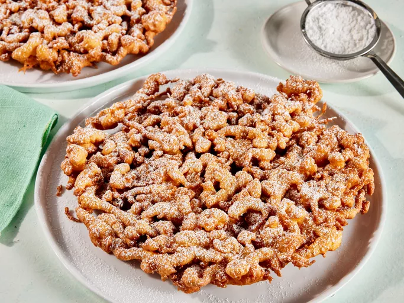

WORLDS BEST FUNNEL CAKE

FUNNEL CAKE RECIPE
This funnel cake recipe will let you enjoy a delicious old-fashioned treat without going to a county fair. You'll need a funnel with a 1/2-inch opening that can hold a cup of batter.
Ingredients
- 1 quart vegetable oil for frying, or as needed
- 1 ½ cups milk
- 2 large eggs
- 2 cups all-purpose flour
Steps
- Gather all ingredients. Heat oil to 375 degrees F (190 degrees C) in a heavy skillet.
- Beat milk and eggs together in a large bowl.
- Combine flour, baking powder, cinnamon, and salt in a separate bowl
Home